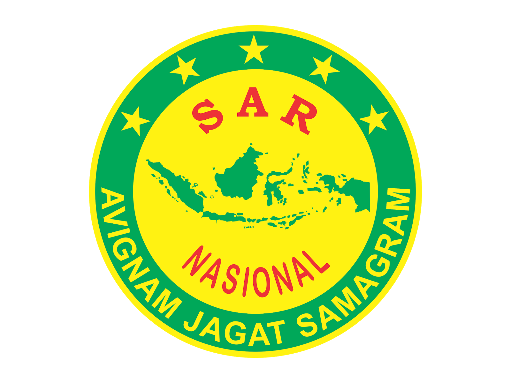

 BASARNAS
Badan Nasional Pencarian dan Pertolongan (BNPP) atau dikenal dengan BASARNAS, adalah Lembaga Pemerintah Nonkementerian yang bertugas melaksanakan tugas pemerintahan di bidang pencarian dan pertolongan (Search And Rescue/SAR). Perubahan nama Badan SAR Nasional (BASARNAS) menjadi Badan Nasional Pencarian dan Pertolongan berdasarkan Peraturan Presiden (Perpres) Nomor 83 Tahun 2016 tentang Badan Nasional Pencarian dan Pertolongan yang ditandatangani presiden Joko Widodo pada tanggal 6 September 2016.TUGAS
Badan Nasional Pencarian dan Pertolongan mempunyai tugas pokok melaksanakan pembinaan, pengkoordinasian, dan pengendalian potensi SAR dalam kegiatan SAR terhadap orang dan material yang hilang atau dikhawatirkan hilang atau menghadapi bahaya dalam pelayaran dan/atau penerbangan, serta memberikan bantuan dalam bencana dan musibah lainnya sesuai dengan peraturan SAR nasional dan internasional. Secara jelas tugas dan fungsi SAR adalah penanganan musibah pelayaran dan/atau penerbangan, dan/atau bencana dan/atau musibah lainnya dalam upaya pencarian dan pertolongan saat terjadinya musibah. Penanganan terhadap musibah yang dimaksud meliputi 2 hal pokok yaitu pencarian (search) dan pertolongan (rescue). Dalam melaksanakan tugas penanganan musibah pelayaran dan penerbangan harus sejalan dengan IMO dan ICAO.SEJARAH
Sejarah Badan Nasional Pencarian dan Pertolongan dimulai dengan terbitnya Keputusan Presiden No 11 Tahun 1972 tanggal 28 Februari 1972 tentang Badan SAR Indonesia (BASARI), dengan tugas pokok menangani musibah kecelakaan dan pelayaran. BASARI berkedudukan dan bertanggung jawab kepada Presiden dan sebagai pelaksanan di lapangan diserahkan kepada PUSARNAS (Pusat SAR Nasional) yang diketuai oleh seorang pejabat dari Departemen Perhubungan. Pada tahun 1980 berdasarkan keputusan Menteri Perhubungan nomor KM.91/OT.002/Phb-80 dan KM 164/OT.002/Phb-80, tentang Organisasi dan tata kerja Departemen Perhubungan, PUSARNAS menjadi Badan SAR Nasional (BASARNAS). Perubahan struktur organisasi BASARNAS mengalami perbaikan pada tahun 1998 berdasarkan Keputusan Menteri Perhubungan nomor KM. 80 tahun 1998, tentang Organisasi dan Tata Kerja BASARNAS dan KM. Nomor 81 tahun 1998 tentang Organisasi dan Tata Kerja Kantor SAR. Pada tahun 2001, struktur organisasi BASARNAS diadakan perubahan sesuai dengan Keputusan Menteri Perhubungan KM. Nomor 24 tahun 2001 tentang Organisasi dan Tata Kerja Departemen Perhubungan dan Keputusan Menteri Perhubungan No. 79 tahun 2002 tentang Organisasi dan Tata Kerja Kantor Search and Rescue (SAR) Dengan meningkatnya tuntutan masyarakat mengenai pelayanan jasa SAR dan adanya perubahan situasi dan kondisi Indonesia serta untuk terus mengikuti perkembangan IPTEK, maka organisasi SAR di Indonesia terus mengalami penyesuaian dari waktu ke waktu. Organisasi SAR di Indonesia saat ini diatur dengan Peraturan Menteri Perhubungan No. KM 43 Tahun 2005 tentang Organisasi dan Tata Kerja Departemen Perhubungan dan Keputusan Menteri Perhubungan No. KM 79 Tahun 2002 tentang Organisasi dan Tata Kerja Kantor SAR. Dalam rangka terus meningkatkan pelayanan SAR kepada masyarakat, maka pemerintah telah menetapkan Peraturan Pemerintah No. 36 Tahun 2006 tentang Pencarian dan Pertolongan yang mengatur bahwa Pelaksanaan SAR (yang meliputi usaha dan kegiatan mencari, menolong, dan menyelamatkan jiwa manusia yang hilang atau menghadapi bahaya dalam musibah pelayaran, dan/atau penerbangan, atau bencana atau musibah lainnya) dikoordinasikan oleh Basarnas yang berada di bawah dan bertanggungjawab langsung kepada Presiden. Menindak lanjuti Peraturan Pemerintah tsb, Basarnas saat ini sedang berusaha mengembangkan organisasinya sebagai Lembaga Pemerintah Non Departemen sebagai upaya menyelenggarakan pelaksanaan SAR yang efektif, efisien, cepat, handal, dan aman. Terakhir, berdasarkan Peraturan Presiden No. 99 Tahun 2007, BASARNAS ditetapkan sebagai Lembaga Pemerintah Non Departemen (LPND) yang berada di bawah dan bertanggung jawab langsung kepada Presiden. Tanggal 16 September 2014 UU Nomor. 29 Tahun 2014 tentang Pencarian dan Pertolongan disahkan oleh Komisi V DPR-RI.